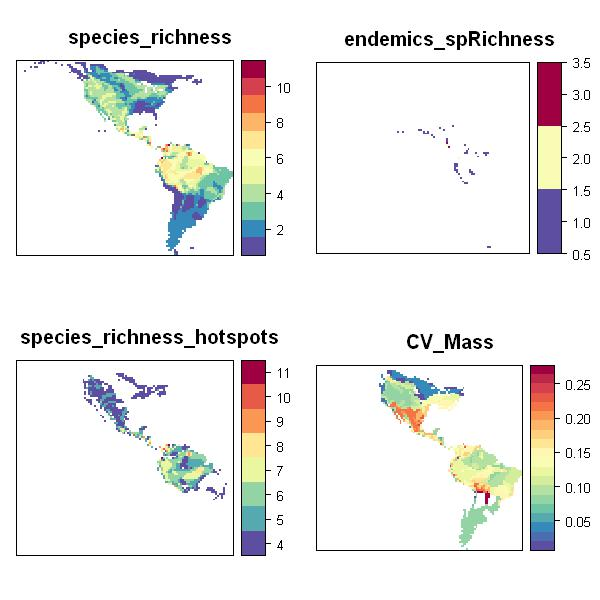

>
Appendix S2
Supporting information in Valcu, M., James. D, Kempenaers, B. rangeMapper: A platform for the study of macroecology of life history traits, Global Ecology and Biogeography, in press (2011)
Case study 1: Different biodiversity hotspots and their congruence.

|
This script runs with R version 2.14.0 (2011-10-31) & rangeMapper 0.1-1 |
# Loads the package and its dependencies. require(rangeMapper)
# SET UP PROJECT td = tempdir() #Initiates a new rangeMapper project (wrens.sqlite) to a temporary directory dbcon = rangeMap.start(file = "wrens.sqlite", dir = td, overwrite = TRUE) #Location of the vector(*.shp) breeding ranges on disk branges = system.file(package = "rangeMapper", "extdata", "wrens", "vector_combined")
# Saves the global bounding box as the union of all species bounding boxes. global.bbox.save(con = dbcon, bbox = branges)
# Saves the grid size (i.e. the size of a canvas cell) using the default value # The grid size can be specified by e.g. gridSize.save(dbcon, gridSize = 2.5) gridSize.save(dbcon)
# Saves the canvas grid using the global bunding box and the grid size. canvas.save(dbcon)
# Performs vector range maps interpolation with the canvas. r = readOGR(branges, "wrens", verbose = FALSE) processRanges(spdf = r, con = dbcon, ID = "sci_name", metadata = rangeTraits() )
# Uploads to the existing project a data.frame containing life history data data(wrens) bio.save(con = dbcon, loc = wrens, ID = "sci_name")
# DEFINE HOTSPOTS PARAMETERS (i.e. the quantile of the given parameter used as a threshold value)
P_richness = 0.75 # species richness probability P_endemics = 0.35 # endemic species richness probability
# HOTSPOTS OF SPECIES RICHNESS MAP # 1) Save the species richeness (SR) map rangeMap.save(dbcon, tableName = "species_richness")
# 2) Fetch the SR map and find the SR value corresponding with the probability # previously defined by P_richness sr = rangeMap.fetch(dbcon, "species_richness") sr_threshold = quantile(sr$species_richness, probs = P_richness, na.rm = TRUE)
# 3) Save the SR hotspots map; only canvas cells with species_richness >= sr_threshold will be included
rangeMap.save(dbcon, tableName = "species_richness_hotspots",subset =
list(MAP_species_richness = paste("species_richness >=", sr_threshold)) )
# HOTSPOTS OF ENDEMIC SPECIES MAP
# 1) Save endemics species richnes map
es = RMQuery(dbcon, "select Area from metadata_ranges")
es_threshold = quantile(es$Area, probs = P_endemics, na.rm = TRUE)
rangeMap.save(dbcon, tableName = "endemics_spRichness",subset =
list(metadata_ranges = paste("Area <= ", es_threshold) ) )
# 2) Save hotspots of endemics
er = rangeMap.fetch(dbcon, "endemics_spRichness")
er_threshold = quantile(er$endemics_spRichness, probs = P_richness, na.rm = TRUE)
rangeMap.save(dbcon, tableName = "endemics_hotspots", subset = list(
MAP_endemics_spRichness = paste("endemics_spRichness >=", er_threshold) ) )
# HOTSPOTS OF BODY MASS MAP
#1) Save Coefficient of variation (CV_Mass) map using a function (FUN) defined
# on the fly. The ... argunent of the function will allow further arguments
# in this case 'na.rm = TRUE' to be passed to FUN.
rangeMap.save(dbcon,FUN = function(x,...) (sd(log(x),...)/mean(log(x),...)),
na.rm = TRUE, biotab = "wrens", biotrait = "body_mass",
tableName = "CV_Mass")
# 2) Find the 'CV_Mass' threshold which corresponds with 'P_richness' bmr = rangeMap.fetch(dbcon, "CV_Mass") bmr_threshold = quantile(bmr$CV_Mass, probs = P_richness, na.rm = TRUE)
# 3) Save bodyMass richness hotspots map using the computed threshold
rangeMap.save(dbcon, tableName = "bodyMass_richness_hotspots",subset = list(
MAP_CV_Mass = paste("body_mass >=", bmr_threshold) ) )
# FETCH MAPS & PLOT
SRmaps = rangeMap.fetch(dbcon, c("species_richness", "species_richness_hotspots",
"endemics_spRichness", "CV_Mass") )
plot(SRmaps, style = 'equal')

# HOTSPOTS CONGRUENCE
# 1) Find threshold values sr = rangeMap.fetch(dbcon, "species_richness") Q_richnes = quantile(sr$species_richness, probs = P_richness, na.rm = TRUE) er = rangeMap.fetch(dbcon, "endemics_spRichness") Q_endemics = quantile(er$endemics_spRichness, probs = P_richness, na.rm = TRUE) bmr = rangeMap.fetch(dbcon, "CV_Mass") Q_bodyMass = quantile(bmr$CV_Mass, probs = P_richness,na.rm = TRUE)
# 2) Save cumulative hotspot congruence satisfying all three criteria
rangeMap.save(dbcon, tableName = "cumul_congruence_hotspots",subset = list(
MAP_CV_Mass = paste("body_mass>=",Q_bodyMass),
MAP_species_richness = paste("species_richness>=",Q_richnes),
MAP_endemics_spRichness = paste("endemics_spRichness>=",Q_endemics) ))
#3) species richness & endemics richness congruence (two criteria are satified)
rangeMap.save(dbcon, tableName = "SR_ER_congruence_hotspots",subset = list(
MAP_species_richness = paste("species_richness>=",Q_richnes),
MAP_endemics_spRichness = paste("endemics_spRichness>=",Q_endemics) ))
# 4) endemics richness & body mass diversity congruence
rangeMap.save(dbcon, tableName = "ER_BR_congruence_hotspots",
subset = list(
MAP_CV_Mass=paste("body_mass>=",Q_bodyMass),
MAP_endemics_spRichness=paste("endemics_spRichness>=",Q_endemics) ))
# 5) species richness & body mass diversity congruence
rangeMap.save(dbcon, tableName = "SR_BR_congruence_hotspots",
subset = list(
MAP_CV_Mass=paste("body_mass>=",Q_bodyMass),
MAP_species_richness=paste("species_richness>=",Q_richnes) ))
# 6) Retrieve all the map objects.
m = rangeMap.fetch(dbcon, c("species_richness_hotspots","endemics_hotspots",
"bodyMass_richness_hotspots","cumul_congruence_hotspots",
"SR_ER_congruence_hotspots","SR_BR_congruence_hotspots",
"ER_BR_congruence_hotspots") )
# 7) Compute hotspots congruence # The data slot of the map 'm' can be queried for presence/absence using the 'is.na' function. sr = length( which(!is.na(m$species_richness_hotspots))) er = length( which(!is.na(m$endemics_hotspots))) br = length( which(!is.na(m$bodyMass_richness_hotspots))) srer = length( which(!is.na(na.omit(m$SR_ER_congruence_hotspots))) ) srbr = length( which(!is.na(na.omit(m$SR_BR_congruence_hotspots))) ) erbr = length( which(!is.na(na.omit(m$ER_BR_congruence_hotspots))) ) cum = length( which(!is.na(na.omit(m$cumul_congruence_hotspots))) )
# Print the results # species richness & body mass diversity congruence (%) (srbr/(sr+br))*100
[1] 18.29724
# endemics richness & body mass diversity congruence (%) (erbr/(er+br))*100
[1] 4.526749
# species richness & endemics richness congruence (%) (srer/(sr+er))*100
[1] 4.188482
#cumulative congruence (%) (cum/(sr+er+br))*100
[1] 1.366906
Website built with R version 2.14.0 (2011-10-31) and the package “ascii” version 2.1 |